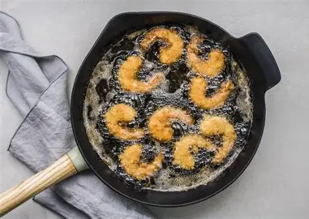
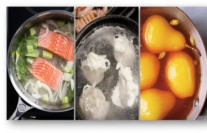

Cooking food in hot water, commonly used for rice and vegetables.

Cooking food in hot oil to get a crispy texture, such as fried snacks.
Using steam to cook food, preserving nutrients and flavor.
Cooking food with dry heat in an oven, used for bread and cakes.
Cooking food with direct heat, usually from below or above, to develop a rich flavour.
Cooking food with dry heat, commonly in an oven, to develop colour and flavour.
Quickly cooking small pieces of food in a small amount of oil or fat.

Gently cooking food in a hot liquid kept below a full boil.